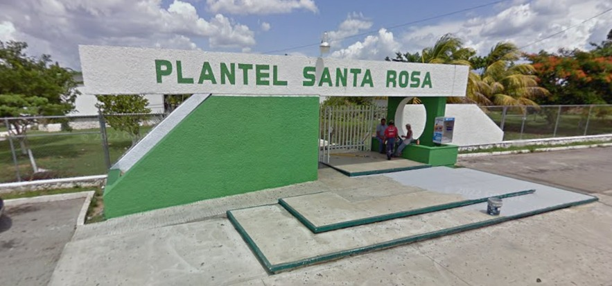

Historia y Contexto de Fundación

El Colegio de Bachilleres del Estado de Yucatán (COBAY) Plantel Santa Rosa no nació como una escuela aislada, sino como la pieza central de un "Complejo Educativo" diseñado para que los estudiantes del sur no tuvieran que cruzar toda la ciudad para completar su formación, desde preescolar hasta la universidad.
Detalles Clave del Inicio:
- El Terreno: El área donde se asienta el complejo era anteriormente una zona con menos desarrollo urbano. La donación de Víctor Cervera Pacheco buscaba elevar la plusvalía social del sur de Mérida.
- Crecimiento de la Matrícula: Aunque mencionas que iniciaron con un solo grupo de primer semestre, el éxito fue tan inmediato que en pocos años la demanda obligó a expandir la infraestructura a lo que vemos hoy: múltiples edificios y laboratorios.
- Identidad Institucional: El director que lo fundó es el Mtro. Pedro López Chan, e inicialmente iniciaron con un grupo únicamente de primero. Los maestros Fundadores eran Marco Almeida Aranda, Freddy Briceño Contreras, Elvira Caama Vázquez, Deysi Mogue López, Teresa González Palomo, Carlos Abadia Pacheco, Cecilia Ojeda Lizama, Marisol Coba Pérez , Rafael Antonio Uc, Arely Canul, Andrés Paulino Martínez Sales.
El Impacto del Complejo Educativo Santa Rosa
Este modelo permitió que:
- Continuidad Académica: Un alumno pudiera estudiar toda su vida en la misma manzana.
- Seguridad: Al haber un flujo constante de estudiantes de todas las edades, la zona de Santa Rosa se dinamizó económicamente.
Hitos en sus 27 años (próximo aniversario):
A lo largo de estas casi tres décadas, el COBAY Santa Rosa se ha destacado por:
- Logros Deportivos y Culturales: Especialmente en las "Olimpiadas Cobay", donde el plantel suele ser un fuerte competidor en escoltas y bandas de guerra.
- Evolución Tecnológica: Pasó de gises y pizarrones a contar con centros de cómputo que sirven de apoyo para las capacitaciones para el trabajo (como Informática o Contabilidad).
Nota: El COBAY, a nivel estatal, se consolidó en los años 80 y 90, pero el plantel Santa Rosa fue la respuesta definitiva a la explosión demográfica de Mérida al final del siglo XX.